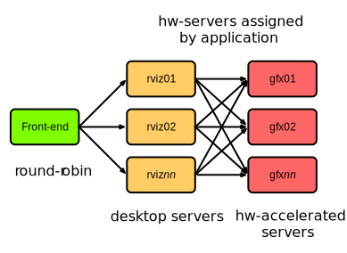
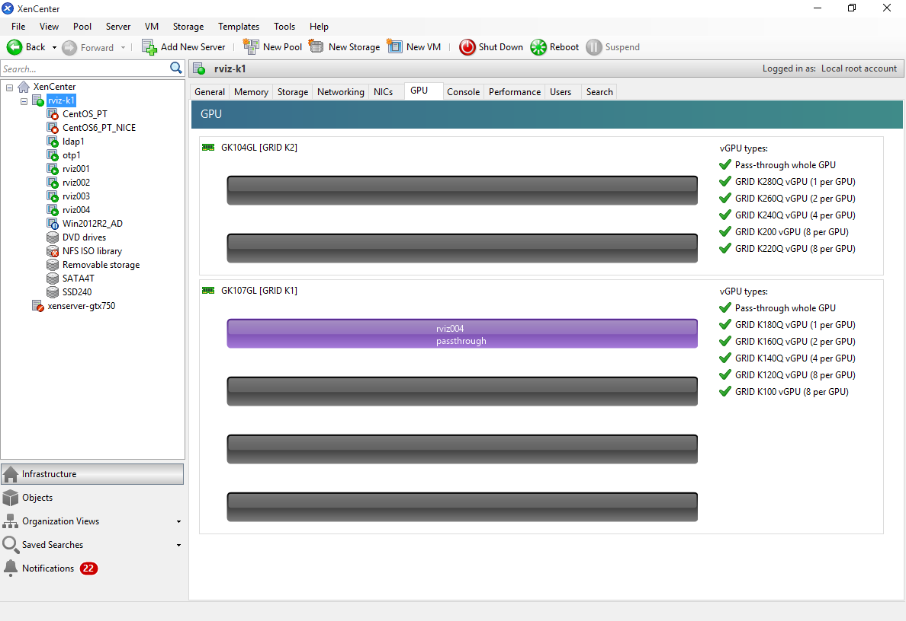
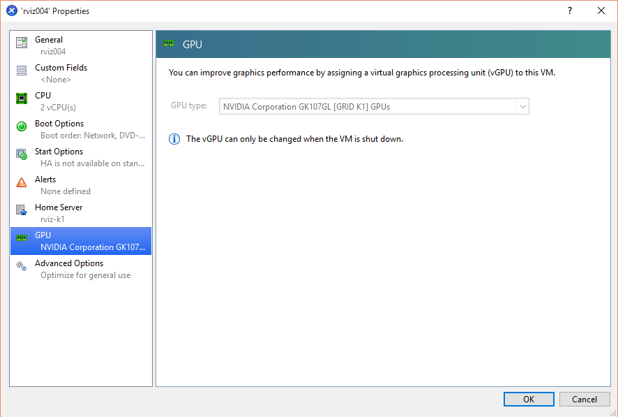

% A next generation desktop infrastructure for HPC % Jonas Lindemann;Anders Follin % 2016-01-26
Introduction
During the 2013-2015 Lunarc has been operating a desktop infrastructure on the Alarik resource, to evaluate if this could complement the existing terminal-based environment. This environment have been continously been in production since mid 2013 and been a great success among the users. We currently have approximately between 30-50 active users in this environment.
A prototype system was procured to test and develop ideas for a more rich and scalable SNIC desktop architecture. The prototype was installed in the beginning of 2015 and will be the blueprint for the upcoming Aurora desktop infrastructure.
The Alarik Desktop infrastructure
The desktop infrastructure deployed on Alarik consists of a front-end server with a Thinlinc server, 2 back-end nodes acting as desktop servers (Thinlinc agents). The Thinlinc server will assign users to one of the back-end servers depending on the current load of the back-end server.
The back-end servers only support 2D graphics or emulated 3D graphics. To support applications requiring hardware accelerated graphics, 2 additional servers with NVIDIA Quadro 5000 cards provide this functionality.
Hardware graphics support is implemented using the VirtualGL protocol and is setup for specific applications provided throug a customised menu in desktop environment. Running such an application will connect to the backend graphics server using a special protocol, vglconnect, which will stream the accelerated application from the back-end server.

Lessons learned
In general the implemented infrastructure have worked very well and have had no major issues. However, some lessons have been learnt during the use of this setup.
- The desktop infrastructure can scale by adding server, but a session is assigned to a specific back-end server and shares the resources with other users on the same resource.
- Resource limits are not easily enforced. It is possible for users with large visualisation needs to overallocate memory and the user experience of other users on the same node will suffer severely.
- It is difficult to provide users with exclusive access to dedicated server for running graphical applications.
- VirtualGL has to be configure on a per application basis and access to the graphics card is shared, reducing the performance depending on the number of users using the graphics card at the same time.
- Supporting the desktop system is not the same as supporting an HPC resource. Tools for monitoring desktop sessions needs to be developed to provide a smooth user experience.
- Existing authentication solutions must be taken into account when implementing a desktop infrastructure. The One Time Password system used at Lunarc needed to be adjusted to be able to used with Thinlinc to support the re-use of OTP-tokens.
- There is a reliance on commercial software, such as Thinlinc, which can be a risk as well as an advantage.
The SNIC ET Prototype system
To be able to try different desktop solutions and configurations a prototype system was procured during end of 2014. The procured hardware was chosen in a way that we could evaluate many of the availble solutions as possible.
The final hardware consisted of:
- XenServer with NVIDIA Grid K1/K2 cards
- 48 GB Memory
- 2 x 2620v3 Xeon Processors at 2.4 GHz
- 1 x NVIDIA Grid K1 card
- 1 x NVIDIA Grid K2 card
- Storage array with 6 x 1 TB 2.5 inch drives
- Server with consumer grade NVIDIA cards
- 64 GB Memory
- 2 x 2620v3 Xeon Processors at 2.4 GHz
- 2 x NVIDIA Grid GTX 980
- Server with Xeon processor with built-in graphics
- 32 GB Memory
- 1 x Xeon E3-1268L
- Infiniband switch
- Gigabit switch
Virtual environment for sharing GPU:s
An interesting development is the ability for virtual environments to provide access to hardware based graphics acceleration to GPU-nodes. Sharing can be done using 2 methods. In the first method, a part of a GPU is shared with a virtual machine. This is often called virtual GPU or vGPU. Similar to the concept of virtual CPU or vCPU in standard virtual environments. The method is currently not well supported for Linux based virtual machines. In the second method, an entire GPU is shared with a virtual machine. The address space of the GPU is passed-through to the virtual machine. The method is often called pass-through GPU.
For Windows based virtual machines the vGPU concept works well and the RemoteFX protocol and client can be used to access the accelerated desktop. Performance is good and the limiting factor here is the network-bandwidth to the client application. The problem with this approach is to find a way of integrating Windows support in a SNIC desktop infrastructure. This issue is covered more in the following sections.
Passing through GPU:s to Linux based virtual machines works well using XenServer as long as a generic Linux is selected when creating the virtual machine. If a supported Linux distribution is selected pass-through is disabled. To be able to take advantage of the GPU the NVIDIA driver has to be installed on the virtual machine and configured for desktop use. As the pass-through GPU does not provide a display in a normal sense. Access to acceleration must be provided through VirtualGL or similar methods of capturing the image stream from the GPU. We have succesfully tested CentOS 7 based virtual machines with pass-through GPU.
Using the installed K1/K2 cards from NVIDIA the prototype can provide 6 (4+2) pass-through GPU:s to Linux based virtual machines. For moderate needs the K2 card can be replaced with a K1 card and the soluion can provide 8 Linux based virtual machines with accelerated graphics. If vGPU gets better Linux support a single XenServer can provide up to 32 virtual machines with accelerated graphics.
Xeon processors with built-in graphics
Another interesting development is the introduction of built-in graphics in Xeon server processors. Previously Intel support for built-in graphics was limited to desktop machines and laptops, making it difficult to provide a solution that can be used in a data center or HPC context.
Intel now have several Xeon server processors with built-in graphics with the Xeon E3-1200 family. One of the servers in the prototype uses a E3-1268L processor with built-in graphics. These processors are often provided in a small formfactors, enabling high-density solutions with supporting accelerated graphics.
The graphics performance of these processors are limited to low-end graphics acceleration, but could be a solution for moderate graphics need.
Consumer grade graphics solution
For enterprise and high-end graphics, NVIDIA provides the Quadro series of graphics cards. These are expensive cards often tailored for enterprise applications. An idea we discussed in this project, was to evaluate the use of consumer grade graphics cards such as the NVIDIA GTX 980 to provide high-end graphics performance to a lower cost. A machine with 2 GTX 980 cards where installed in a standard rack-mountable workstation. The performance is very good and they can provide an alternative to the Quadro cards. However, the problem with the consumer cards is that they are designed to be actively cooled with a built-in fan, limiting its use in high-density deployment.
Remote desktop solutions
Unix and Linux have since many years been able to provide remote desktop services using the X11 protocol. However, the X11 protocol requires the user to install a X11 server on the client system, which can be very complicated and not well supported on all platforms. Also, the protocol itself is not inherintly secure and to use it securely it has to be tunneled or used through a VPN, increasing the complexity of using this solution.
A a more platform independent solution is Virtual Network Computer or VNC. This technology uses the Remote Frame Buffer protocol or RFB. The technology relays mouse and keyboard event to a remote computer and transfers updated portions of the frame buffer over the network. VNC is open source and has spawned several projects providing different implementations of the protocol. By default the VNC implementation uses a unsecure authentication mechanism, but many of the VNC projects add an additional security layer either by tunneling through SSH or implementing its own security layer.
There also exists several proprietary solutions as well implementing their own protocols and authentication. In this project we have evaluated some of these protocols to see what benefits and limitations they provide.
Thinlinc
ThinLinc is a VNC implementation from a Swedish company, Cendio. The ThinLinc solution include both a native client for Mac OS X, Linux and Windows and server side components.
The server side part of ThinLinc can be used to implement a single server solution as well as scalable solution over several servers (agents). The main server load balances desktop sessions over all agents depending on the current load of the agent server.
One of the biggest benefits of using ThinLinc is their support of native, easy to use, clients for all major platforms. With a simple one-click installer the client can be installed on all major platforms.
Nice DCV
Desktop Cloud Visualisation, DCV, from NICE is a proprietary solution and protocol for providing remote desktop services. DCV supports hardware acceleration using NVIDIA GRID technologies as well as fully supporting hardware acceleration under Windows as well as Linux.
The server side is built on VNC with custom additions for supporting hardware accelerated graphics. The DCV server can also operate in different modes.
- Pass-through mode supporting a single VM with a passthrough GPU
- XenServer 6.x support vGPUs
- Standalone server with GPU.
The benefits of NICE DCV is the support of multiple OS application servers, enabling users to run hardware accelerated Windows and Linux applications. When evaluating DCV, it was not clear how it's security framework can integrate in a HPC Linux environment. Does it support PAM-modules and integration of external authentication protcols? Pricing of the product is also quite high compared to the Thinlinc solution.
The NICE DCV solution was evaluated on XenServer 6.5 using the NVIDIA K1 and K2 cards. Installation was easy and it supported vGPU sharing under Windows.
Microsoft Remote Desktop / RemoteFX
Microsoft have had remote desktop services built-in to the professional and enterprise offerings for a long time, with their Remote Desktop Protocol or RDP. Recently they support hardware accelererated graphics through RDP using a technology called RemoteFX.
The RDP protocol in its non-accelerated form is supported from a Linux client using the rdesktop application. The RemoteFX protocol is however not yet supported. Using RDP, 2D Windows applications can be provided to a Linux based desktop environment using the rdesktop tool.
The RemoteFX protocol has been evaluated on the XenServer 6.5 using the NVIDIA K1 an K2 cards and works vGPUs with a special NVIDIA driver. Performance is good enough to run high-end visualisation software and games.
XenApp / XenDesktop
The RDP protocol was originally developed by Citrix for Microsoft as their remote desktop product Terminal Server. Citrix has continued their development of RDP and this protocol is what is used in their remote desktop/application solutions XenDesktop and XenApp.
XenDesktop provides a desktop environment and XenApp is a special derivative of the XenDesktop that only provide remote access to specific graphical applications without the desktop.
The XenDesktop and XenApp solutions can both work with hardware accelerated graphics natively or through vGPU on a hypervisor. Currently the major platform is Windows, but there is work on providing support for Linux based application and dekstop virtualisation.
It was decided not to evaluate this solution as its support for Linux is not yet developed.
Prototype Desktop Infrastructure
The high-level goals of a next generation desktop infrastructure:
- Support allocation of desktop sessions through a resource management system such as SLURM.
- Provide a scalable solution that can be extended based on user demands.
- Create a easy to use system for users to allocate custom desktop sessions without using command line tools.
- Support additional OS environments such as Windows through a single unified desktop.
Prototype setup
To be able to evaluate the different scenarios the prototype setup was implemented as a standard HPC cluster with commonly found services such as:
- Resource manager (rviz-intel) - SLURM for job management
- LDAP server (ldap1) - for user and group authentication
- OTP server (otp1) - for two-factor authentication (PhenixID server)
The prototype also has 3 networks:
- External network - available on rviz-intel.
- Internal gigabit network - available on rviz-intel and all nodes.
- Infiniband network - available on all rviz-intel and all nodes.
- Admin network - for handling hardware interfaces.
XenServer 6.5 Hypervisor
To be able to evaluate how hypervisors can be used to provide hardware accelerated graphics to virtual machines, the XenServer 6.5 Hypervisor was installed on the server with the NVIDIA GRID K1/K2 cards. The hypervisor was also used to provide additional services to the prototype such as LDAP and OTP services.
XenServer 6.5 is able to provide GPU:s either as vGPU:s for Windows OS or using pass-trhough on Linux based distributions. To evaluate Linux support a virtual machine was created and assigned a NVIDIA K1 or K2 card. The machine was then installed with CentOS 7 as this is the OS that is most likely to be the target platform of upcoming SNIC resources.

